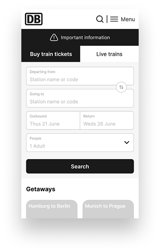
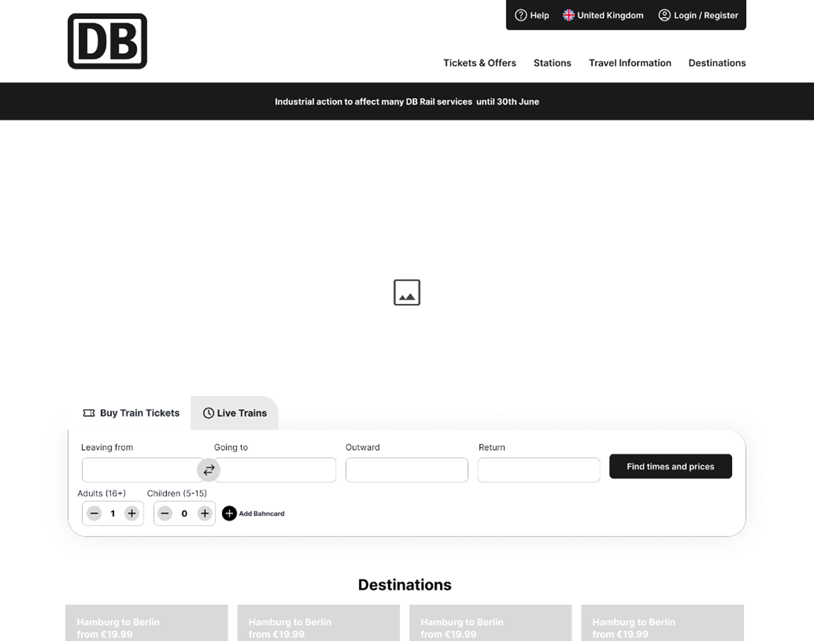

<link
  href="https://cdn.jsdelivr.net/npm/bootstrap@5.3.3/dist/css/bootstrap.min.css"
  rel="stylesheet"
/>
<link rel="stylesheet" href="style.css" />
<link
  href="https://cdn.jsdelivr.net/npm/aos@2.3.4/dist/aos.css"
  rel="stylesheet"
/>
<link
  rel="stylesheet"
  href="https://cdn.jsdelivr.net/npm/bootstrap-icons@1.10.5/font/bootstrap-icons.css"
/>

<!-- Custom Navbar -->
    <nav
      class="navbar custom-navbar navbar-expand-lg py-3"
      data-aos="fade-down"
      data-aos-delay="200"
      data-aos-duration="1000"
    >
      <div class="container">
        <!-- Brand -->
        <a class="navbar-brand" href="index.html">
          <span>Afra</span>
          <span>Tetlay</span>
        </a>

        <!-- Toggler / Hamburger -->
        <button
          class="navbar-toggler"
          type="button"
          data-bs-toggle="collapse"
          data-bs-target="#navbarContent"
          aria-controls="navbarContent"
          aria-expanded="false"
          aria-label="Toggle navigation"
        >
          <span class="navbar-toggler-icon"></span>
        </button>

        <!-- Collapsible content -->
        <div class="collapse navbar-collapse" id="navbarContent">
          <div
            class="ms-auto navbar-nav d-flex flex-column flex-lg-row align-items-start align-lg-center gap-3 gap-lg-5"
          >
            <a class="nav-link" href="about.html">About</a>
            <a class="nav-link" href="case-studies.html">Case Studies</a>
            <a class="nav-link pill-button" href="get-in-touch.html"
              >Get in Touch</a
            >
          </div>
        </div>
      </div>
    </nav>
<section class="case-studies-section py-5">
  <div class="row align-items-center mb-5">
    <!-- Content Card (Text first) -->
    <div
      class="col-12 mb-4 d-flex justify-content-center"
      data-aos="fade-left"
      data-aos-delay="200"
      data-aos-duration="1000"
    >
      <div class="rounded text-center">
        <!-- Tags -->
        <div class="mb-4">
          <span class="badge background-red text-white me-2">Desktop</span>
          <span class="badge background-red text-white me-2">Web Mobile</span>
          <span class="badge background-red text-white">App</span>
        </div>
        <!-- Title & Description -->
        <h1 class="fw-bold text-red">Deutsche Bahn (DB)</h1>
        <p>
          This project focuses on redesigning the DB Train website and app to
          enhance user<br />
          experience and functionality.
        </p>
      </div>
    </div>

    <!-- Image (below text) -->
    <div
      class="col-12 text-center"
      data-aos="fade-right"
      data-aos-delay="200"
      data-aos-duration="1000"
    >
      
    </div>
  </div>
</section>

<section class="py-5">
  <div class="container">
    <!-- Title + Intro -->
    <h5 class="text-red fw-bold">Deutsche Bahn (DB) Booking page</h5>
    <p>
      I aim to provide users with a
      <span class="badge background-red text-white"
        >seamless and efficient</span
      >
      platform for planning and managing their train journeys. Key enhancements
      will include a more user-friendly interface, personalised travel
      recommendations, real-time updates. Overall, the goal is to create a
      <span class="badge background-red text-white"
        >modern, responsive, and user-centric</span
      >
      platform that meets the diverse needs of DB Train customers.
    </p>
    

    <!-- Project Overview -->
    <h3 class="text-red fw-bold mt-5 mb-4">Project Overview</h3>
    <div class="row g-4">
      <!-- Left: Challenge + Goals -->
      <div class="col-lg-8">
        <div class="mb-4 p-4 rounded background-light-red">
          <h5 class="fw-bold"><i class="bi bi-bullseye"></i> Challenge</h5>
          <p>
            This project aims to update the DB Train website and app to enhance
            customer friendliness and ensure that important information is
            easily accessible.
          </p>
        </div>

        <div class="p-4 rounded background-light-red">
          <h5 class="fw-bold"><i class="bi bi-lightbulb"></i> Goals</h5>
          <p>
            The redesign will focus on displaying key details clearly, such as
            trip dates, times, destinations, and ticket statuses...
          </p>
          <ul>
            <li>Progression bar of where the train is currently at</li>
            <li>Live train departures and arrivals</li>
            <li>More user friendly</li>
          </ul>
          <p class="fw-semibold">
            This will help reduce the contact with customer service
          </p>
        </div>
      </div>

      <!-- Right: Sidebar -->
      <div class="col-lg-4">
        <div class="p-4 mb-4 rounded background-light-red">
          <h6 class="fw-bold">
            <i class="bi bi-rocket-takeoff"></i> Role & Responsibilities
          </h6>
          <ul class="mb-0">
            <li>Storyboarding</li>
            <li>Accessibility</li>
            <li>Prototyping</li>
            <li>Wireframing</li>
            <li>User Journey</li>
            <li>UI Execution</li>
          </ul>
        </div>

        <div class="p-4 rounded background-light-red">
          <h6 class="fw-bold"><i class="bi bi-tools"></i> Tools</h6>
          <p class="mb-0">Figma</p>
        </div>
      </div>
    </div>

    <!-- DB Existing Site -->
    <h3 class="text-red fw-bold mt-5">DB existing site</h3>
    <div class="row g-4 align-items-center">
  <!-- Desktop Image -->
  <div class="col-12 col-md-8 col-lg-9 text-center">
    
  </div>
  <!-- Mobile/App Image -->
  <div class="col-12 col-md-4 col-lg-3 text-center">
    
  </div>
</div>

    <h3 class="text-red fw-bold mt-5">Research</h3>
    <p>
      The research into DB Train App's user experience involved comprehensive
      empathy mapping to understand the diverse needs and preferences of our
      users. The focus groups for this project were different customer segments,
      including daily commuters, students, business travellers, and occasional
      travellers. This helped me identify key pain points, such as the lack of
      live updates, the need for a clean and intuitive user journey, and the
      desire for more detailed information about train amenities. This
      research-driven approach ensures that our updates are closely aligned with
      the actual needs and expectations of the users.
    </p>
    <h4 class="text-red fw-bold mt-5">Competitive analysis</h4>
    <p>
      The competitive analysis of the DB Train App highlights several key
      strengths and areas for improvement. The app excels with its intuitive
      user interface and seamless integration with DB’s services, ensuring a
      straightforward booking and travel experience. However, it lacks real-time
      updates, detailed information about onboard amenities, and could benefit
      from a more streamlined booking process.
    </p>
    <ul>
      <li>Trainline</li>
      <li>National Rail</li>
      <li>Avanti Trains</li>
      <li>East midlands</li>
    </ul>
    <p>
      To stay competitive and enhance user satisfaction, the DB Train App should
      focus on integrating reliable real-time updates, providing comprehensive
      information about train amenities, and exploring additional services such
      as bus connections and accommodation bookings. Addressing these areas will
      position the DB Train App more favourably in the market.
    </p>
    <!-- Trainline Existing Site -->
 <h5 class="fw-bold py-3">Trainline</h5>
<div class="row g-4 align-items-center">
  <!-- Desktop Image -->
  <div class="col-12 col-md-8 col-lg-9 text-center">
    
  </div>

  <!-- Mobile/App Image -->
  <div class="col-12 col-md-4 col-lg-3 text-center">
    
  </div>
</div>

    <!-- National Rail Existing Site -->
    <h5 class="fw-bold py-3">National Rail</h5>
    <div class="row g-4 align-items-center">
      <div class="col-12 col-md-8 col-lg-9 text-center">
        
      </div>
      <div class="col-12 col-md-4 col-lg-3 text-center">
        
      </div>
    </div>
    <!-- Avanti Existing Site -->
    <h5 class="fw-bold py-3">Avanti</h5>
    <div class="row g-4 align-items-center">
      <div class="col-12 col-md-8 col-lg-9 text-center">
        
      </div>
      <div class="col-12 col-md-4 col-lg-3 text-center">
        
      </div>
    </div>
    <!-- East Midlands Existing Site -->
    <h5 class="fw-bold py-3">East Midlands</h5>
    <div class="row g-4 align-items-center">
      <div class="col-12 col-md-8 col-lg-9 text-center">
        
      </div>
      <div class="col-12 col-md-4 col-lg-3 text-center">
        
      </div>
    </div>
    <section class="container my-5">
      <h3 class="text-red fw-bold">Project Goals</h3>
      <p>
        In the initial stages of redesigning the DB Train app and website,
        wireframes played a crucial role in mapping out the user interface and
        experience. These low-fidelity sketches allowed me to plan the layout,
        functionality, and navigation pathways, ensuring that my solutions met
        user needs effectively.
      </p>
    </section>
    
    <section class="container my-5">
      <h3 class="text-red fw-bold">
        Wireframes for App, Mobile Web and Web page
      </h3>
      <p>
        In the initial stages of redesigning the DB Train app and website,
        wireframes played a crucial role in mapping out the user interface and
        experience. These low-fidelity sketches allowed me to plan the layout,
        functionality, and navigation pathways, ensuring that my solutions met
        user needs effectively.
      </p>
    </section>
    <h5 class="fw-bold py-3">Idea one</h5>
    <div class="row g-4 align-items-center">
      <div class="col-12 col-md-8 col-lg-9 text-center">
        
      </div>
      <div class="col-12 col-md-4 col-lg-3 text-center">
        
      </div>
    </div>
    <h5 class="fw-bold py-3">Idea two</h5>
    <div class="row g-4 align-items-center">
      <div class="col-12 col-md-8 col-lg-9 text-center">
        
      </div>
      <div class="col-12 col-md-4 col-lg-3 text-center">
        
      </div>
    </div>
    <h5 class="fw-bold py-3">Idea three</h5>
    <div class="row g-4 align-items-center">
      <div class="col-12 col-md-8 col-lg-9 text-center">
        
      </div>
      <div class="col-12 col-md-4 col-lg-3 text-center">
        
      </div>
    </div>
    <h5 class="fw-bold py-3">Idea four</h5>
    <div class="row g-4 align-items-center">
      <div class="col-12 col-md-8 col-lg-9 text-center">
        
      </div>
      <div class="col-12 col-md-4 col-lg-3 text-center">
        
      </div>
    </div>
    <h5 class="fw-bold py-3">Idea five</h5>
    <div class="row g-4 align-items-center">
      <div class="col-12 col-md-8 col-lg-9 text-center">
        
      </div>
      <div class="col-12 col-md-4 col-lg-3 text-center">
        
      </div>
    </div>
    <h3 class="text-red fw-bold">Chosen Wireframe</h3>
    <div class="row g-4 align-items-center">
      <div class="col-12 col-md-8 col-lg-9 text-center">
        
      </div>
      <div class="col-12 col-md-4 col-lg-3 text-center">
        
      </div>
    </div>
    <h3 class="text-red fw-bold">Final Design</h3>
    <p>
      Here, you can see the final design, showcasing the comprehensive layout
      for live train updates as well as the full web application. This design
      seamlessly integrates real-time information and user-friendly navigation
      to enhance the overall user experience.
    </p>
    <div class="row g-4">
      <div class="col-md-8">
        
      </div>

      <div class="col-md-4">
        <div class="row g-2">
          <!-- Nested row for side-by-side images -->
          <div class="col-6">
            
          </div>
          <div class="col-6">
            
          </div>
        </div>
      </div>
  </div>
</section>

<!-- Project Navigation (above footer) -->
<div
  class="d-flex justify-content-between align-items-center px-4 py-3"
  style="background-color: #1ba4a4; color: white"
>
  <a href="index.html" class="text-white fw-bold text-decoration-none">
    <i class="bi bi-arrow-left"></i> Back to homepage
  </a>
  <a href="game-haul.html" class="text-white fw-bold text-decoration-none">
    Next Project – Gamehaul <i class="bi bi-arrow-right"></i>
  </a>
</div>

<!-- Contact Section -->
<div
  class="d-flex flex-column flex-md-row justify-content-between align-items-center px-4 py-4"
  style="background-color: #0d3448; color: white"
>
  <!-- Back to Top -->
  <div class="text-center mb-3 mb-md-0">
    <a href="#top" class="btn btn-light shadow-sm">
      <i class="bi bi-arrow-up"></i>
    </a>
    <div class="small mt-2">Back to the top</div>
  </div>

  <!-- Contact Info -->
  <div class="text-center">
    <h4 class="fw-bold mb-2">Like what you see? Let’s talk <span>😊</span></h4>
    <p class="mb-0">
      <i class="bi bi-envelope"></i> Email Address:
      <a
        href="mailto:afraetlay@gmail.com"
        class="text-white text-decoration-none"
        >afratetlay@gmail.com</a
      >
    </p>
  </div>
</div>

<footer class="text-center py-3 bg-dark text-white">
  &copy; <span id="year"></span> Afra Tetlay. All rights reserved.
</footer>

<!-- AOS JS -->
 <script src="https://cdn.jsdelivr.net/npm/bootstrap@5.3.3/dist/js/bootstrap.bundle.min.js"></script>

<script src="https://cdn.jsdelivr.net/npm/aos@2.3.4/dist/aos.js"></script>
<script>
  document.addEventListener("DOMContentLoaded", function () {
    AOS.init({ once: true }); // only animate once
    document.getElementById("year").textContent = new Date().getFullYear();
  });
</script>
